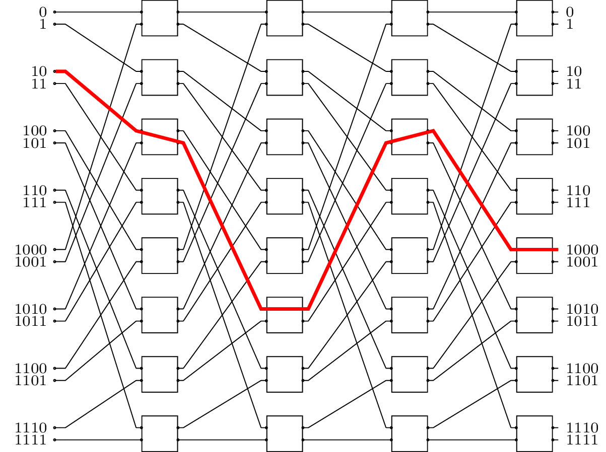

\documentclass{standalone}
\usepackage{tikz}
\usepackage{sa-tikz}
\usetikzlibrary{positioning}
\begin{document}
\tikzset{module size=0.6cm,pin length factor=0.6,
module ysep=1.0, module xsep=3.5}
\begin{tikzpicture}[P=16]
\node[banyan omega={module label opacity=0}] {};
\newcounter{portb}
\setcounter{portb}{0}
\foreach \module in {1,...,8}{
\foreach \port in {1,...,2}{
\stepcounter{portb}
\pgfmathbin{\theportb-1}
\node[left] at (r0-\module-front input-\port)
{\scriptsize{\pgfmathresult}};
\node[right] at (r4-\module-front output-\port)
{\scriptsize{\pgfmathresult}};
}
}
\draw[red,ultra thick] (r0-2-front input-1) -- (r0-2-front output-1)--
(r1-3-front input-1) -- (r1-3-front output-2)-- (r2-6-front input-1)--
(r2-6-front output-1) -- (r3-3-front input-2) -- (r3-3-front output-1)--
(r4-5-front input-1) -- (r4-5-front output-1);
\end{tikzpicture}
\end{document}Created by David Li